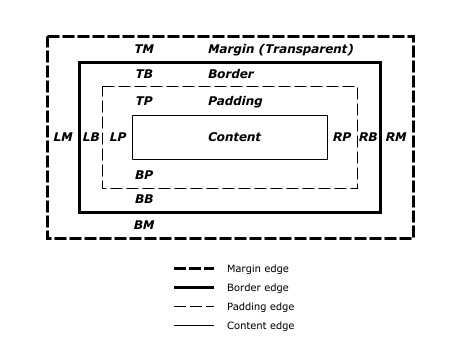

盒子模型
| 属性 | 值 | 描述 |
|---|---|---|
| width | px,% | 设置页面的宽度（用百分比时，相对值，相对于父元素的宽度，进行百分比计算） |
| height | px,% | 设置页面的高度（相对值，相对于父元素的高度，进行百分比计算） |
| padding | px,% | 控制边框以内的空隙大小，具体是指内容到边框之间的空位。 |
| margin | px,% | 控制边框以外的空隙大小，具体是指边框之外的空位 |
css盒子模型：

一个css布局中都会有一个盒子模型里面都分为四部份
元素最终所占宽度
左边框宽 + 左内边距 + 内容宽度 + 右内边距 + 右边框宽 乘 上边框宽 + 上内边距 + 内容宽度 + 下内边距 + 下边框宽
就等于元素最终所占的面积
注意
1.水平方向，相邻元素的margin是叠加的
2.垂直方向，相邻的元素的margin是合并的（取最大值为准）
<html>
<head>
<meta charset="UTF-8">
<title></title>
<style type="text/css">
body{
height: 400px;
margin: 0;
}
div{
background-color: #ffff00;
/*固定值，固定的大小，不会跟随页面大小改变而改变*/
/* 相对值，相对于父元素的宽度，进行百分比计算*/
width: 50%;
width: 200px;
/*相对值，相对于父元素的高度，进行百分比计算*/
height: 50%;
height: 200px;
/*
内边距 padding
控制边框以内的空隙大小，具体是指内容到边框之间的空位。
一个数值的时候四个方向的边都是50px的内边距
* */
/*padding: 50px;*/
/*padding:50px 40px 30px 20px;/* 上50px 右40px 下30px 左20px ，顺时针方向设置四个方向的内边距 * */
/*padding:50px 40px 30px;/* 上50 左右40px 下30px */
padding: 50px 40px;/*上下50px 左右40px */
margin: 30px 20px 10px 5px;/* 上30px 右20px 下10px 左5px ，顺时针方向设置四个方向的外边距 **/
margin: 30px 20px 10px;/* 上30 左右20px 下10px */
margin: 30px 20px;/*上下30px 左右20px */
margin: 50px;/*四个方向都是50px*/
/*
元素最终所占宽度：
左边框宽 + 左内边距 + 内容宽度 + 右内边距 + 右边框宽 乘 上边框宽 + 上内边距 + 内容宽度 + 下内边距 + 下边框宽
就等于元素最终所占的面积
* */
border-width: 10px;
border-color: skyblue;
border-style: solid;
}
</style>
</head>
<body>
<div class="test">
我是一个盒子
</div>
<a href="">12333</a>
</body>
</html>